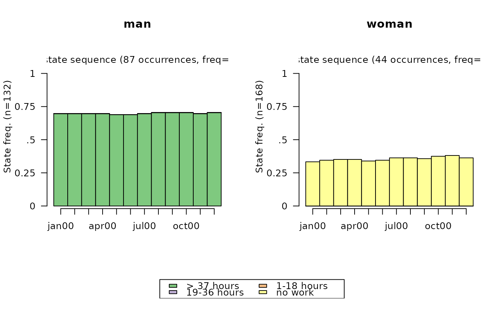
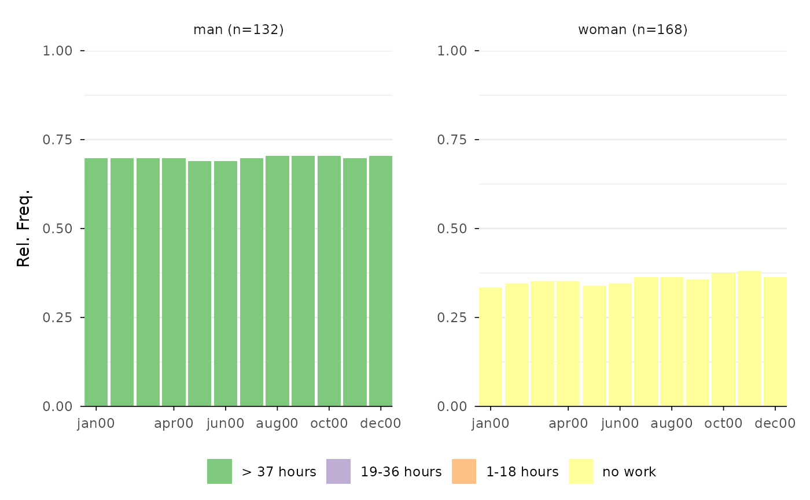
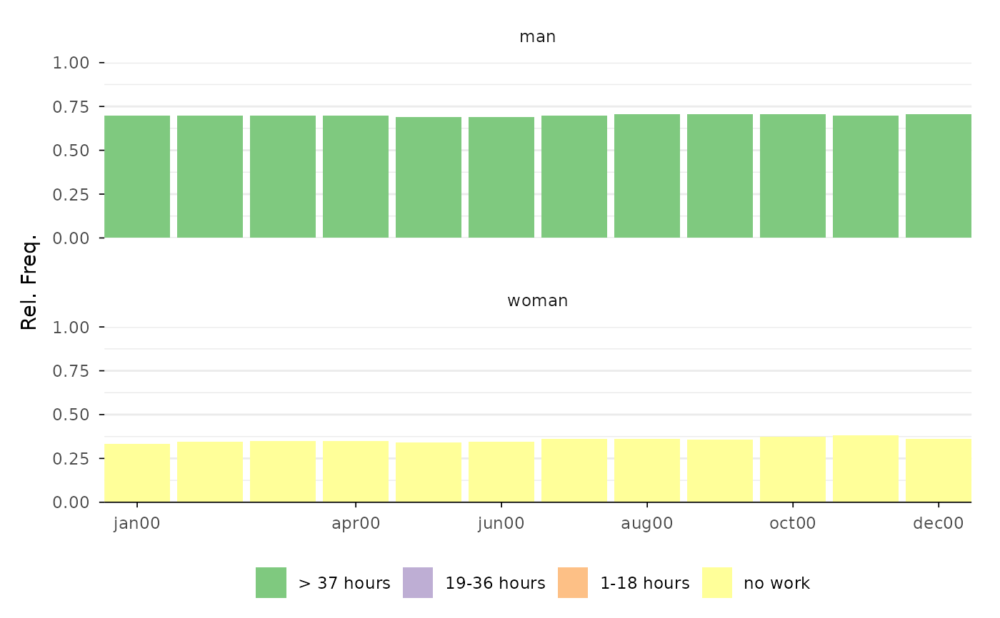

Function for rendering modal state sequence plot with
ggplot2 (Wickham 2016)
instead
of base R's plot function that is used by
TraMineR::seqplot (Gabadinho et al. 2011)
.
Usage
ggseqmsplot(
seqdata,
no.n = FALSE,
barwidth = NULL,
group = NULL,
weighted = TRUE,
with.missing = FALSE,
border = FALSE,
facet_ncol = NULL,
facet_nrow = NULL
)Arguments
- seqdata
State sequence object (class
stslist) created with theTraMineR::seqdeffunction.- no.n
specifies if number of (weighted) sequences is shown (default is
TRUE)- barwidth
specifies width of bars (default is
NULL); valid range: (0, 1]- group
A vector of the same length as the sequence data indicating group membership. When not NULL, a distinct plot is generated for each level of group.
- weighted
Controls if weights (specified in
TraMineR::seqdef) should be used. Default isTRUE, i.e. if available weights are used- with.missing
Specifies if missing states should be considered when computing the state distributions (default is
FALSE).- border
if
TRUEbars are plotted with black outline; default isFALSE(also acceptsNULL)- facet_ncol
Number of columns in faceted (i.e. grouped) plot
- facet_nrow
Number of rows in faceted (i.e. grouped) plot
Value
A modal state sequence plot. If stored as object the resulting list object also contains the data (long format) used for rendering the plot
Details
The function uses TraMineR::seqmodst
to obtain the modal states and their prevalence. This requires that the
input data (seqdata) are stored as state sequence object (class stslist)
created with the TraMineR::seqdef function.
The data on the modal states and their prevalences are reshaped to be plotted with
ggplot2::geom_bar. The data
and specifications used for rendering the plot can be obtained by storing the
plot as an object. The appearance of the plot can be adjusted just like with
every other ggplot (e.g., by changing the theme or the scale using + and
the respective functions).
References
Gabadinho A, Ritschard G, Müller NS, Studer M (2011).
“Analyzing and Visualizing State Sequences in R with TraMineR.”
Journal of Statistical Software, 40(4), 1–37.
doi:10.18637/jss.v040.i04
.
Wickham H (2016).
ggplot2: Elegant Graphics for Data Analysis, Use R!, 2nd ed. edition.
Springer, Cham.
doi:10.1007/978-3-319-24277-4
.
Examples
# Use example data from TraMineR: actcal data set
data(actcal)
# We use only a sample of 300 cases
set.seed(1)
actcal <- actcal[sample(nrow(actcal), 300), ]
actcal.lab <- c("> 37 hours", "19-36 hours", "1-18 hours", "no work")
actcal.seq <- seqdef(actcal, 13:24, labels = actcal.lab)
#> [>] 4 distinct states appear in the data:
#> 1 = A
#> 2 = B
#> 3 = C
#> 4 = D
#> [>] state coding:
#> [alphabet] [label] [long label]
#> 1 A A > 37 hours
#> 2 B B 19-36 hours
#> 3 C C 1-18 hours
#> 4 D D no work
#> [>] 300 sequences in the data set
#> [>] min/max sequence length: 12/12
# modal state sequence plot; grouped by sex
# with TraMineR::seqplot
seqmsplot(actcal.seq, group = actcal$sex)

# with ggseqplot
ggseqmsplot(actcal.seq, group = actcal$sex)
#> Warning: Ignoring empty aesthetic: `width`.

# with ggseqplot and some layout changes
ggseqmsplot(actcal.seq, group = actcal$sex, no.n = TRUE, border = FALSE, facet_nrow = 2)
#> Warning: Ignoring empty aesthetic: `width`.
